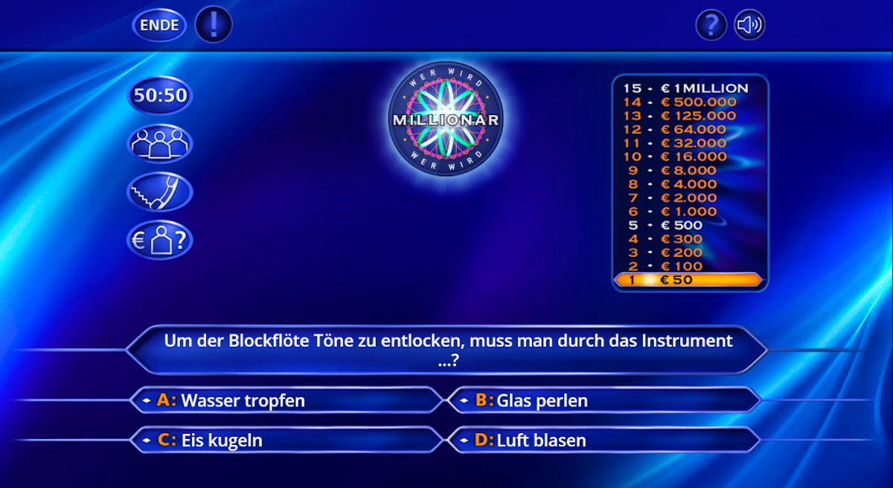
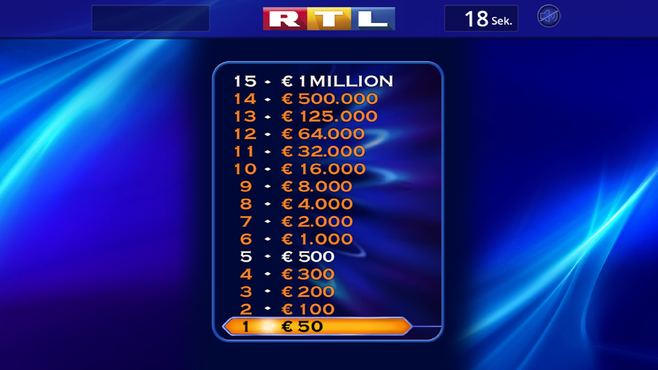

Die Regeln

- Der Kandidat muss 15 Fragen (in Deutschland) mit aufsteigendem Schwierigkeitsgrad beantworten.
- Jede Frage hat vier Antwortmöglichkeiten (A, B, C, D), von denen eine korrekt ist.
- Mit jeder korrekt beantworteten Frage steigt der Gewinnbetrag.

- Sicherheitsstufe 1: 1.000 € (bei Frage 5)
- Sicherheitsstufe 2: 16.000 € (bei Frage 10)
- Erreicht der Kandidat eine Sicherheitsstufe, wird dieser Betrag im Falle eines falschen Antwortversuchs garantiert.
- 50:50-Joker: Zwei falsche Antworten werden entfernt...
- Publikumsjoker: Das Publikum stimmt ab...
- Telefonjoker: Der Kandidat ruft eine vertraute Person an...
- Zusatzjoker: Ein einzelner Zuschauer wird befragt...


- Antwort geben: Wenn der Kandidat sicher ist...
- Joker einsetzen: Der Kandidat kann einen der Joker verwenden...
- Aufhören: Der Kandidat kann jederzeit aussteigen...
- Falsche Antwort: Gibt der Kandidat eine falsche Antwort...

- Risiko-Variante: Kandidaten können eine Sicherheitsstufe selbst festlegen...
- Promi-Specials: Hier spielen Prominente für den guten Zweck...